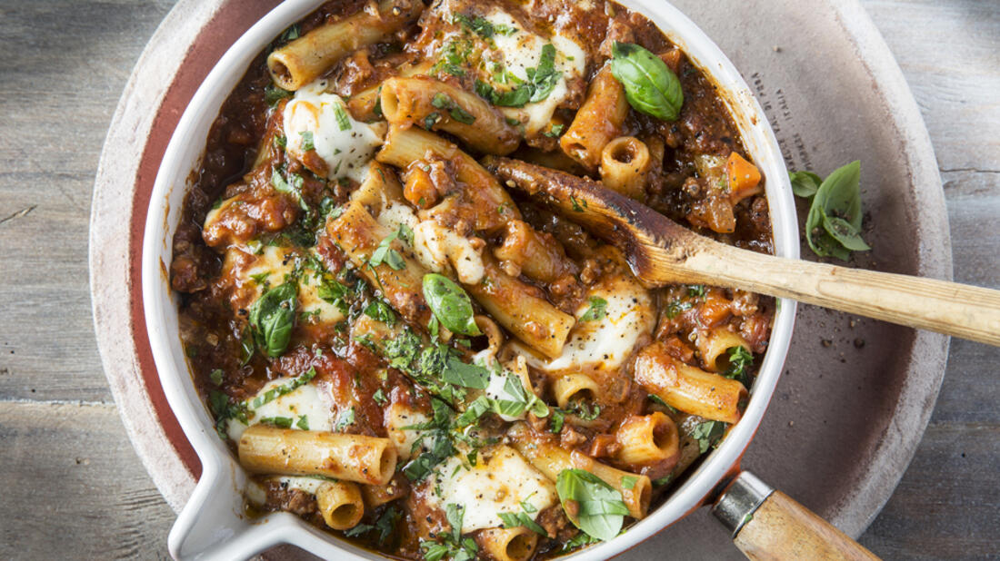

One pot pasta

«One pot pasta»-prinsippet er at mange gode smaker får koke sammen til noe enda bedre. Altså, du har alle ingrediensene i en gryte, inkludert ukokt pasta, og lar det koke til pastaen er (nesten perfekt) kokt og væsken redusert til saus. Pastaen suger til seg smak underveis i kokingen og alt blir ferdig samtidig.
Ingredienser
- 1 stk løk
- 2 fedd hvitløk
- 2 stk gulrot
- 3 stilker stangselleri
- 2 ts oregano
- 500g kjøttdeig
- 2 bokser hermetiske tomater
- 8 dl kjøttkraft
- 350 g pasta
- 1 stk mozzarella
Fremgangsmåte
- Finhakk løk og hvitløk. Skjær gulrøtter og selleri i små terninger.
- Varm en god klunk olivenolje i en romslig gryte. Fres løk og hvitløk og la det frese videre i noen minutter. Løken skal bli myk og gyllen, men ikke brun. Tilsett gulrøtter, selleri og oregano. Fres videre til alle grønnsakene er myke og lett gylne (cirka 10 minutter).
- Tilsett kjøttdeigen og fres videre til kjøttdeigen er brunet. Tilsett tomater og kjøttkraft. Kok opp og la sausen småputre i cirka 20 minutter. Smak til med salt, pepper og en klype sukker. Ha i pastaen og la det hele småkoke videre til sausen har tyknet og pastaen er ferdigkokt (cirka 15 minutter). Rør med jevne mellomrom underveis i kokingen slik at det ikke fester seg i bunnen av gryta.
- Topp gryta med mozzarella i biter og grovhakket basilikum.